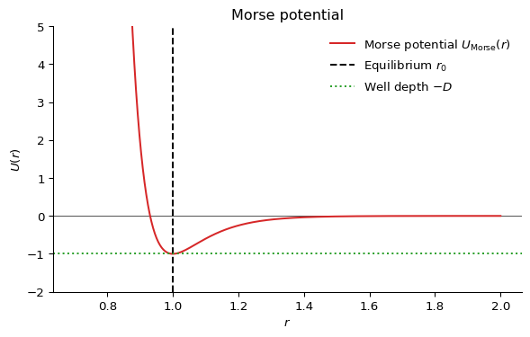
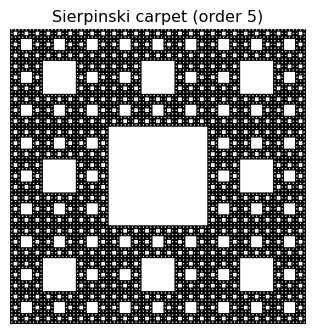

18 Arrested states
In these chapters we have been considering systems implicitly (or explicitly) in thermal equilibrium with a surrounding environment. This is typically some kind of dispersion medium (a solvent). But we have also been more demanding: we have required that the dispersed phase (the colloids, the polymers the anisotropic particles of liquid crystals) have explored exhaustively their free energy options and that they are truly in some macrostate corresponding to a global, stable thermal equilibrium state.
Equilibrium signifies time reversibility.
At equilibrium, the entropy change \(\Delta S\) of a system between two times \(t_1, t_2\) or equivalently the entropy production \(\frac{dS}{dt}\) are zero. Hence the transformation between \(t_1\) and \(t_2\) has to be reversible.
Many fluids, whether simple liquids like argon or complex liquids such as colloids and polymers, can be rapidly cooled (quenched) to temperatures well below their equilibrium freezing point without crystallization occurring on experimental timescales. In thermodynamic terms this is interpreted as a failure of the system to reach its true equilibrium (minimum free energy) state, namely the ordered crystalline phase. At these low temperatures, the dynamics slows down and the large scale structures remain disordered as the parent fluids. This slow dynamics is however characterised by a continuous drift away from equilibrium, with all of the characteristics of the systems (slowly) evolving during time as the system ages.
These relaxation dynamics are examples of nonequilibrium processes: the system spontaneously relaxes under the competing constraints of its kinetic rules (typically, diffusion mechanisms) and from the shape of its free energy profile.
In this chapter we are going to consider two paradigmatic cases of such nonequilibrium dynamics
- glasses, where the system falls out of equilibrium due to a dramatic slowing down of dynamics as temperature decreases or density increases, leading to a rigid but disordered structure.
- physical gels, where the system forms a disordered, arrested state due to the formation of a percolating network of reversible bonds (e.g., hydrogen bonds or van der Waals interactions) between particles.
What is distinctive of both gels and glasses is that they are both examples of amorphous materials that behave like solids: they lack long-range atomic order yet resist deformation like crystalline solids. Indeed one can calculate properties that are distinctive of solids for both gels and glasses, including:
- Elastic moduli (such as the shear modulus \(G\) and bulk modulus \(K\)): Both gels and glasses exhibit a finite shear modulus, meaning they can sustain a static shear stress without flowing, unlike liquids.
- Yield stress: They can support a certain amount of stress before yielding or flowing, a property absent in equilibrium fluids.
- Vibrational density of states: Amorphous solids display a characteristic “boson peak” in their vibrational spectrum, distinct from the phonon modes of crystals.
These features highlight that rigidity and solidity do not require crystalline order; amorphous materials like gels and glasses can be mechanically solid while remaining structurally disordered. Indeed, the border between solidity and fluidity has been questioned in recent research work, emphasizing how this depends on observational timescales and the notion of metastability, see Sausset, Biroli, and Kurchan (2010).
18.1 Energy landscapes
The free energy landscape is a conceptual framework used to describe the multitude of possible configurations (microstates) of a system and their associated free energies. Each point in this high-dimensional landscape corresponds to a particular arrangement of all the particles in the system, and the height at that point represents the free energy of that configuration. In particular, the landscapes is characterised by the presence of free energy minima (valleys) which correspond to stable or metastable states—configurations where the system tends to reside and local maxima (barrier) between the valleys, representing the so-called transition states.
Various minima can be clustered together when their energies are relatively close, i.e. when the barriers that separate them are of the order of the energy from thermal fluctuations \(k_B T\). These clusters of minima are known as (meta)-basins and are very important for amorphous systems: the same system at the same temperature can display similar macroscopic characteristic not because these reflect the properties of one particular minimum, but because they are the result of local averaging within a given metabasin.
In the context of supercooled liquids and glasses, the landscape is rugged, with many local minima separated by high barriers. At high temperatures, the system can easily hop between minima (exploring many configurations), but as the temperature decreases, it becomes trapped in deeper minima, leading to slow dynamics and eventual dynamical arrest (glass formation).
Similarly, in the case of gels, the free energy landscape is also rugged, but the system becomes arrested due to the formation of a percolating network of reversible bonds. Instead of being trapped in deep minima solely by energetic barriers (as in glasses), the system’s dynamics are constrained by the connectivity of the network. The system can only relax if enough bonds break and reform to allow large-scale rearrangements, which becomes increasingly unlikely as the network spans the system. Thus, the arrested state in gels is associated with the system being confined within a region of the landscape corresponding to networked, mechanically stable configurations, separated from other regions by high barriers related to breaking the network connectivity.
The free energy landscape is helpful as it suggests ways to enumerate distinct conformations of a disordered system: the various metabasins can be in principle enumerated. Their number \(N_{\rm minima}\) allows us to define a configurational entropy:
\[ S_{\rm conf} = k_B \ln N_{\rm minima} \]
How is this different from the total entropy? In principle, the total entropy \(S\) can be obtained from thermodynamic relations, for example as an integral over the pressure:
\[ S(T) = S(T_0) + \int_{T_0}^{T} \frac{1}{T'} \left( \frac{\partial P}{\partial T'} \right)_V dV \]
or, more commonly for liquids and glasses at constant volume,
\[ S(T) = S(T_0) + \int_{T_0}^{T} \frac{C_V(T')}{T'} dT' \]
where \(C_V\) is the heat capacity at constant volume and \(T_0\) is a reference temperature. For a fluid like a gas, only the total entropy is well defined. Even for a liquid at high temperature this is the case, because there are no meaningful metabasins in the free energy profile.
It is only as we decrease the temperature further that the metabasins can be defined (via coarse-graining). These reference conformations can be used to split the total entropy into two contributions
\[S = S_{\rm conf}+S_{\rm vib}\]
where \(S_{\rm vib}\) is the vibrational entropy around the reference conformations, and is mainly due to thermal fluctuations. In this sense, we are describing the thermodynamics of a disordered system in a way closer to what we would do for a crystal, where the reference conformations are provided by the crustalline packings (e.g. FCC, HCP, BCC etc.).
18.2 Glasses
18.2.1 Glass formation
There exist numerous types of glassformers: these include atomic glasses (such as silicate glasses and metallic glasses), molecular glasses (organic molecules, sugar glasses), polymer glasses (amorphous polymers), colloidal glasses (dense suspensions of colloidal particles). Each type is characterized by the nature and scale of its constituents, the interactions that frustrate crystallization, and its physical properties. The table below summarizes some representative examples:
| Glassformer | Scale of Constituents | Properties |
|---|---|---|
| Silicate glass | Atomic (Si, O atoms) | Strong, transparent, high melting point |
| Metallic glass | Atomic (metal atoms) | High strength, corrosion resistant, ductile |
| Polymer glass | Macromolecular (polymers) | Flexible, low density, tunable glass transition |
| Colloidal glass | Mesoscopic (colloids, ~nm–μm) | Opaque, tunable rheology, soft solid-like |
| Molecular glass | Molecular (organic molecules) | Low melting point, fragile, optical uses |
| Sugar glass | Molecular (sucrose, glucose) | Brittle, water soluble, low thermal stability |
| Chalcogenide glass | Atomic (S, Se, Te atoms) | Infrared transparency, phase-change memory |
All of them are amorphous, in the sense that they are disordered and do not posses long range positional or orientational order. all of them are different, but they are often formed following a similar protocol.
How are glasses formed? The figure below illustrates the standard route. First of all, one selects systems for which crystal formation (via nucleation and growth) is hindered (or in other words, frustrated): this can be because of the overall composition (silicate glasses, i.e. window glasses, have many components) or because of competing interactions (binary mixtures may have interactions between the A and B components that favour mixing without crystallisation).
Then, for a chosen composition, one cools down the liquid across the temperature where in principle (if given enough time) the system would crystallise (dubbed \(T_m\)). The liquid becomes a so-called supercooled liquid which is a state of local equilibrium that has access to many disordered basins, but not the crystaline one (see energy landscape picture above).
As we keep on cooling the supercooled liquid to lower and lower temperature, the molecules or constituents move more and more slowly, so that the diffusivity is progressively reduced. This slowing down is typically characterized in terms of autocorrelation functions of the density.
A common way to quantify this is through the (self-part) intermediate scattering function \(F_s(q, t)\), which measures how density fluctuations at a given wavevector \(q\) decay over time:
The intermediate scattering function \(F_s(q, t)\) can be decomposed into two contributions:
- Self part \(F_s^{\text{self}}(q, t)\): Measures the correlation of each particle with its own initial position. It captures single-particle dynamics (how far a particle moves from where it started).
- Collective part \(F_s^{\text{coll}}(q, t)\): Measures correlations between different particles, reflecting how density fluctuations evolve collectively. The collective part is given by \[ F_s^{\text{coll}}(q, t) = \frac{1}{N} \left\langle \sum_{j,k=1}^N e^{i \mathbf{q} \cdot [\mathbf{r}_j(t) - \mathbf{r}_k(0)]} \right\rangle \] In glassy systems, the self part is sensitive to particle mobility (e.g., caging and hopping), while the collective part describes how groups of particles rearrange together. Both are important for understanding relaxation and dynamical arrest.
\[ F_s^{\text{self}}(q, t) = \left\langle \frac{1}{N} \sum_{j=1}^N e^{i \mathbf{q} \cdot [\mathbf{r}_j(t) - \mathbf{r}_j(0)]} \right\rangle \]
At high temperatures, \(F_s(q, t)\) decays rapidly, indicating fast relaxation. As temperature decreases, the decay becomes much slower, often exhibiting a two-step relaxation: a rapid initial drop (the “\(\beta\)-relaxation”) followed by a long plateau and then a slow final decay (the “\(\alpha\)-relaxation”). The time at which \(F_s(q, t)\) decays to a certain fraction (e.g., \(1/e\)) defines the structural relaxation time \(\tau_\alpha\), which represents the typical time for a particle to move over a lengthscale \(\sim 2\pi/q\).

As the supercooled liquid gets colder and colder, the relaxation time increases rapidly, eventually of many orders of magnitude. At some experimentally determined temperature the relaxation time is larger than the observation time, i.e.
\[\tau_{\alpha}>t_{\rm obs}\]
This means that it is impossible to take time averages to estimate thermodynamic properties of the system, because the system does not satisfy any longer the minimal requirement of the ergodic hypothesis. This failure of ergodicity means that the system effectively falls out of equilibrium, because it does not explore all relevant microstates within the available time. The system has become a glass. The temperature at which this clearly non-ordinary (and non-thermodynamic!) transition occurs is called the experimental glass transition temperature \(T_g\).
A key feature of the glass transition is that there is no unique glass transition temperature \(T_g\): the transition temperature itself depends on how fast we are cooling the liquid down. It is a protocol dependent property. We can understand this by referring back to the energy landscape: at high temperatures, the system has enough thermal energy to explore many minima in the landscape, hopping over barriers with ease. As the temperature decreases, the barriers become increasingly difficult to cross within the available observation time. If the cooling is slow, the system can equilibrate and find deeper minima, resulting in a lower \(T_g\). If the cooling is fast, the system becomes trapped in higher-energy, shallower minima, and \(T_g\) is higher. Therefore, the glass transition is not a sharp thermodynamic phase transition, but a kinetic phenomenon determined by the interplay between the system’s relaxation time and the timescale of the experimental protocol.
18.3 Viscosity and relaxation times
The structural relaxation time extracted from correlation functions such as the intermediate scattering function is proportional to a macroscopic property, the viscosity
\[\tau_\alpha \propto \eta\]
and hence the viscosity at the glass transition increases rapidly (diverges) like \(\tau_\alpha\).
NoteRelationship between viscosity and structural relaxation time
The proportionality between viscosity \(\eta\) and the structural relaxation time \(\tau_\alpha\) can be understood using linear response theory and the Green-Kubo relations.
The viscosity is given by the Green-Kubo formula as an integral of the stress autocorrelation function: \[ \eta = \frac{1}{k_B T V} \int_0^\infty \langle \sigma_{xy}(0) \sigma_{xy}(t) \rangle dt \] where \(\sigma_{xy}\) is the off-diagonal component of the stress tensor.
In supercooled liquids and glasses, the decay of the stress autocorrelation function is governed by the same slow structural relaxation processes that control \(\tau_\alpha\). Thus, the integral is dominated by timescales of order \(\tau_\alpha\), leading to: \[ \eta \sim G_\infty \tau_\alpha \] where \(G_\infty\) is the instantaneous (high-frequency) shear modulus.
This proportionality holds in the regime where the relaxation is dominated by structural rearrangements (i.e., near the glass transition), and is supported by both experiments and simulations. Therefore, the dramatic increase in viscosity as the glass transition is approached directly reflects the growth of the structural relaxation time.
This dramatic increase in relaxation time is a hallmark of glassy dynamics and underlies the kinetic arrest observed in glasses.
Presently, we do not have a single unified theory of the glass transition: there is no universal law capable to predict the viscosity (or the relaxation times) of glassy systems from specific microscopic parameters. To date, the origin of the glass transition remains one of the major unsolved problems condensed matter physics.
First steps are typically phenomenological: glasses are classified as strong or fragile based on how their viscosity (or relaxation time) increases as temperature decreases toward the glass transition temperature \(T_g\). We have seen earlier in Section 10.2 that activated process are often governed by what are called Arrhenius laws, with a rate \(R\propto \exp\left[-\Delta E/k_B T\right]\) where \(\Delta E\) is an energy barrier. Viscosity curves can be fitted by empirical models inspired the activated picture:
Strong glasses (e.g., silica, SiO\(_2\)) follow an Arrhenius law : \[ \eta(T) = \eta_0 \exp\left(\frac{E_A}{k_B T}\right) \] where \(E_A\) is an activation energy. The plot of \(\log \eta\) vs \(1/T\) is a straight line.
Fragile glasses (e.g., o-terphenyl, many polymers) show super-Arrhenius behavior, often described by the Vogel-Fulcher-Tammann (VFT) equation: \[ \eta(T) = \eta_0 \exp\left(\frac{B}{T - T_0}\right) \] where \(B\) and \(T_0\) are empirical parameters. The plot of \(\log \eta\) vs \(1/T\) is highly curved.
The distinction is visualized in the so-called Angell plot, where strong glasses show nearly linear behavior, while fragile glasses show a dramatic upturn as \(T \to T_g\).
These models are suggestive of a thermodynamic origin of the glass transition. Indeed, it is possible to think of the emerging barrier \(E_A\) and \(B\) as the result of some free energy expression from the sampling of the energy landscapes in various basins.
18.3.1 Connection between VFT and configurational entropy: the Adam-Gibbs model
A key theoretical link between the dramatic slowdown of dynamics (as described by the VFT law) and the underlying thermodynamics is provided by the Adam-Gibbs model, details in Bouchaud and Biroli (2004).
This model proposes that the structural relaxation time \(\tau_\alpha\) is controlled by the configurational entropy \(S_{\rm conf}\), which counts the number of distinct amorphous basins available to the system.
The Adam-Gibbs relation reads: \[ \tau_\alpha(T) = \tau_0 \exp\left(\frac{A}{T S_{\rm conf}(T)}\right) \] where \(A\) is a constant. As temperature decreases, \(S_{\rm conf}\) drops, leading to a rapid increase in \(\tau_\alpha\). If \(S_{\rm conf}\) vanishes at a finite temperature \(T_K\) (the so-called Kauzmann temperature), the relaxation time diverges, reproducing the VFT form: \[ \tau_\alpha(T) \sim \exp\left(\frac{B}{T - T_0}\right) \] with \(T_0 \approx T_K\). Thus, the Adam-Gibbs model provides a thermodynamic interpretation of the VFT law, connecting the kinetic slowdown to the loss of configurational entropy as the glass transition is approached.
18.3.2 Alternative perspective: Dynamical facilitation and the parabolic law
While thermodynamic models like Adam-Gibbs relate the glass transition to configurational entropy, a radical alternative approach is the dynamical facilitation theory, see Chandler and Garrahan (2010) for more details. This framework emphasizes that glassy slowdown arises from the dynamics themselves, rather than underlying thermodynamic changes.
In dynamical facilitation, mobility is sparse at low temperatures: regions of the system can only relax if they are adjacent to already mobile regions—mobility “facilitates” further mobility. This leads to hierarchical, cooperative dynamics without invoking a thermodynamic singularity.
A schematic illustration:
- At high \(T\), mobile regions are abundant and relaxation is fast.
- As \(T\) decreases, mobile regions become rare, and relaxation requires the creation and propagation of mobility, which is a rare event.
- The relaxation time grows rapidly due to the need for cooperative rearrangements.
This scenario predicts a parabolic law for the relaxation time:
\[ \log \tau_\alpha(T) \sim J^2 \left( \frac{1}{T} - \frac{1}{T_0} \right)^2 \]
where \(J\) is an energy scale and \(T_0\) is an onset temperature. Unlike the VFT law, the parabolic law does not diverge at finite \(T\) but still captures the super-Arrhenius growth of relaxation times.
Interestingly, both the two perspective fit the viscosity data well within their regimes of validity (and recent research suggests that close to the glass transition temperature the microscopic mechanisms resemble dynamical facilitation).
Here below is a the visual representation of the time evolution of the magnitude of the displacement field in a model of glass governed by dynamical facilitation, see Hasyim and Mandadapu (2024) for more details.
18.4 Physical gels
The word gel signifies many different things to different scientific communities. In the context of soft matter physics, a physical gel is typically understood as a system in which the constituent particles or polymers are connected via reversible, non-covalent bonds to form a percolating network that spans the entire sample. This network imparts solid-like mechanical properties to the material, even though the underlying structure remains disordered and fluid-like on a microscopic scale.
Physical gels differ from chemical gels, where the network is formed by irreversible covalent bonds. In physical gels, the bonds can break and reform dynamically, have an energy of order \(1 k_BT\), allowing the system to respond to external stresses and sometimes to self-heal. In this sense they are reversible systems and often are known as thermoreversible gels. reversible linking is typically achieved by the formation of dense local regions (e.g. microscystalline or glassy) that act as cross-links to form a spanning network.
Examples include gelatin desserts, agarose gels, and colloidal suspensions such as yoghurt, paint, inks where attractive interactions lead to network formation, see Zaccarelli (2007) for a comprehensive review.
The transition from a fluid to a gel state is often associated with the appearance of a system-spanning cluster, which can be described using concepts from percolation theory. The mechanical rigidity of the gel arises when this cluster forms, leading to a dramatic increase in viscosity and the emergence of an elastic response.
NotePercolation
Percolation is the study of an apparently innocent mathematical problem: take a square grid if \(L\times L\) sites and randomly label \(N\) of them; how does the likelihood of forming a cluster that spans across the grid (i.e. percolates) depend on the probability \(p=N/L^2\) of having a labelled square?
The problem is interesting for its various applications across domains of science as diverse as networks formation, transport, material science, epidemiology and ecology. It is amenable to an analytical treatment and can be solved via direct simulations. Percolation is a classic example of a phase transition and critical phenomena. The probability \(p_c\) at which a spanning cluster first appears is called the percolation threshold. For a large 2D square lattice, \(p_c \approx 0.5927\). Below \(p_c\), only small, disconnected clusters exist; above \(p_c\), a giant connected component spans the system. The transitions is continuous, i.e. second order.
Analytically, percolation is tractable and exhibits universal critical exponents near \(p_c\), making it a cornerstone of statistical physics and network theory.
You can play with percolation on a squared lattice with the code below.
The following table illustrates that various values of the critical percolation probability are known for various lattices, either exactly or via simulation. Notice that this non-universal feature, the critical \(p_c\), decreases with increasing dimensionality: at higher dimensions, the connectivity is naturally higher and so a comparatively smaller fraction of the system is require in order to find a percolating path.
| Lattice Type | Dimension | Coordination \(z\) | \(p_c^{site}\) | \(p_c^{bond}\) |
|---|---|---|---|---|
| Square | 2 | 4 | 0.592746 | 0.5 |
| Triangular | 2 | 6 | 0.5 | 0.347296 |
| Honeycomb | 2 | 3 | 0.697043 | 0.652703 |
| Kagome | 2 | 4 | 0.6527 | 0.5244 |
| Union Jack | 2 | 8 | 0.379 | 0.429 |
| Cubic | 3 | 6 | 0.3116 | 0.2488 |
| FCC | 3 | 12 | 0.199 | 0.120 |
| BCC | 3 | 8 | 0.245 | 0.180 |
| Diamond | 3 | 4 | 0.43 | 0.389 |
| Hypercubic (4D) | 4 | 8 | 0.197 | 0.160 |
| Hypercubic (5D) | 5 | 10 | 0.141 | 0.118 |
| Hypercubic (6D) | 6 | 12 | 0.109 | 0.094 |
| Hypercubic (7D) | 7 | 14 | 0.091 | 0.079 |
| Hypercubic (8D) | 8 | 16 | 0.078 | 0.069 |
Instead, other properties of percolation are universal: these are the critical exponents of observables on the lattice,and do not depend on the lattice detail, such as the probability to find a site in a percolating cluster \(P_{\infty}(p)\propto (p-p_c)^{\beta}\)
| Dimension \(d\) | \(\beta\) (Percolation) |
|---|---|
| 2 | 5/36 ≈ 0.1389 |
| 3 | ≈ 0.41 |
| 4 | ≈ 0.65 |
| 5 | ≈ 0.81 |
| 6 | ≈ 0.96 |
| ≥6 (Mean-field) | 1 |
In the case of physical gels, percolation is a required ingredient for mechanical stability: in the absence of a large spanning percolating network, it is not possible for the gel to sustain external stresses or even self-generated stresses such as its own weight under gravity.
18.4.1 Colloid-polymer mixtures as an example
When the colloids are significantly larger than the polymers, the resulting depletion interaction is attractive and very short ranged: it is a so-called sticky interaction, ideally suited to form robust physical bonds where, the colloids cluster in a nonequilibrium, branched, dense phase.
The resulting phase diagrams different significantly for the ones of simple liquids (e.g., Lennard-Jones interactions): the liquid-gas coexistence curve (the binodal) becomes metastable.
Given the very short range of the interactions, models of colloid polymer mixtures can approximate the Asakura-Oosawa potential (see Section 14.2.5) using even simpler pair-wise interactions. For example, for Monte-Carlo simulations qand theoretical calculations one often uses the square-well model,
The square-well potential \(U(r)\) is defined as:
\[ U(r) = \begin{cases} \infty & r < \sigma \\ -\epsilon & \sigma \leq r < \lambda \sigma \\ 0 & r \geq \lambda \sigma \end{cases} \]
where \(\sigma\) is the particle diameter (hard core), \(\epsilon\) is the well depth (attractive strength), and \(\lambda\) controls the range of the attraction.
For molecular dynamics one often employs the so-called Morse potential, which combines fast exponentially decaying tails and a repulsive core in a simple analytical form
\[ U_{\mathrm{Morse}}(r) = D \left[ e^{-2\alpha (r - r_0)} - 2 e^{-\alpha (r - r_0)} \right] \]
where \(D\) is the well depth, \(\alpha\) controls the range (steepness) of the potential, and \(r_0\) is the equilibrium bond distance.

Pair correlations
In many situation, pair-wise correlation functions are sufficient to capture gel formation. Both the radial distribution function and the structure factor are able to describe gel formation, but they focus (and are accurate) in different regimes:
The radial distribution function \(g(r)\) has best statistics at short distances, capturing the features of the clusters that form the branched network.
In gels near the percolation threshold, the structure factor \(S(q)\) exhibits scale-free (power-law) behavior at low \(q\):
\[ S(q) \sim q^{-D_f} \]
where \(D_f\) is the fractal dimension of the gel network. This power-law regime reflects the absence of a characteristic length scale in the structure—clusters are self-similar over a range of sizes.
- For \(q\) much smaller than the inverse cluster size, \(S(q)\) flattens (finite-size effects).
- For intermediate \(q\), \(S(q) \sim q^{-D_f}\), indicating fractal geometry.
- For large \(q\), \(S(q)\) reflects local (non-fractal) structure.
The exponent \(D_f\) is related to the spatial scaling of mass with size in the fractal cluster: \(M(R) \sim R^{D_f}\). Typical values for percolation clusters in 3D are \(D_f \approx 2.5\).
Thus, by analyzing the low-\(q\) behavior of \(S(q)\), one can extract the fractal dimension and confirm scale-free, self-similar structure in gels.
NoteMeasuring fractal dimensions: the box-counting algorithm
Fractal dimensions are in practice quite tricky to measure. A common method is the box-counting algorithm:
- Overlay a grid of boxes of size \(\ell\) over the structure (e.g., a cluster or network).
- Count the number \(N(\ell)\) of boxes that contain any part of the structure.
- Repeat for different box sizes \(\ell\).
- Plot \(\log N(\ell)\) versus \(\log(1/\ell)\). For a fractal, this plot is linear over some range, and the slope gives the fractal dimension \(D_f\): \[ N(\ell) \sim \ell^{-D_f} \]
This method is widely used for experimental images and simulation data to estimate the fractal dimension of clusters, aggregates, or networks.
Below, illustrate this using a known fractal, the Sierpinski carpet, whose fractal dimensions is exactly \(D_f = \log{8}/\log{3}\approx 1.8929\)
# Example: Box-counting fractal dimension for the Sierpinski carpet
import numpy as np
import matplotlib.pyplot as plt
def sierpinski_carpet(n):
"""Generate a Sierpinski carpet of order n as a 2D boolean array."""
size = 3**n
carpet = np.ones((size, size), dtype=bool)
for i in range(n):
step = 3**i
for x in range(0, size, 3*step):
for y in range(0, size, 3*step):
carpet[x+step:x+2*step, y+step:y+2*step] = False
return carpet
def box_count(img, box_sizes):
"""Count number of boxes containing any part of the structure for each box size using histogramdd."""
N = []
coords = np.argwhere(img)
for box in box_sizes:
bins = [img.shape[0] // box, img.shape[1] // box]
# Assign each coordinate to a box
hist, _ = np.histogramdd(coords, bins=bins, range=[[0, img.shape[0]], [0, img.shape[1]]])
N.append(np.count_nonzero(hist))
return np.array(N)
# Generate Sierpinski carpet
order = 5
carpet = sierpinski_carpet(order)
# Box sizes (powers of 3)
box_sizes = [3**i for i in range(order, 0, -1)]
N_boxes = box_count(carpet, box_sizes)
# Plot Sierpinski carpet
plt.figure(figsize=(4,4))
plt.imshow(carpet, cmap='binary')
plt.title('Sierpinski carpet (order %d)' % order)
plt.axis('off')
plt.show()
# Box-counting plot
plt.figure(figsize=(5,4))
plt.plot(np.log(1/np.array(box_sizes)), np.log(N_boxes), 'o-', label='Box counting')
# Linear fit for slope (fractal dimension)
slope, intercept = np.polyfit(np.log(1/np.array(box_sizes)), np.log(N_boxes), 1)
plt.plot(np.log(1/np.array(box_sizes)), slope*np.log(1/np.array(box_sizes))+intercept, '--', label=f'Fit: $D_f$={slope:.4f}')
plt.xlabel(r'$\log(1/\ell)$')
plt.ylabel(r'$\log N(\ell)$')
plt.title('Box-counting for Sierpinski carpet')
plt.legend(frameon=False)
plt.show()
18.4.2 Arrested spinodal scenario for colloidal gels
But how do colloidal gels come about? A viable scenario is the so-called arrested spinodal decomposition scenario. Here, a system is rapidly quenched into a region of its phase diagram where it would normally phase separate into two distinct phases (e.g., a dense and a dilute phase) via spinodal decomposition. However, before the phase separation can complete, the dynamics of the dense regions slow down dramatically—often due to glassy or jamming behavior—leading to a dynamically arrested, bicontinuous structure.
This process is relevant for colloid-polymer mixtures, protein solutions, and some polymer blends. The resulting gels are characterized by a network-like structure that reflects the early stages of spinodal decomposition, “frozen in” by the arrest of particle motion.
For the arrested spinodal scenario to hold, the system evolves following these steps:
- The system is quenched inside the spinodal region, where spontaneous fluctuations grow.
- Domains of different densities form, but the dense domains become dynamically arrested before macroscopic phase separation completes.
- The final structure is a bicontinuous, percolating network with solid-like mechanical properties.
For more details, see Zaccarelli (2007).
Bouchaud, Jean-Philippe, and Giulio Biroli. 2004. “On the Adam-Gibbs-Kirkpatrick-Thirumalai-Wolynes Scenario for the Viscosity Increase in Glasses.” The Journal of Chemical Physics 121 (15): 7347–54. https://bris.on.worldcat.org/oclc/110636005.
Chandler, David, and Juan P Garrahan. 2010. “Dynamics on the Way to Forming Glass: Bubbles in Space-Time.” Annual Review of Physical Chemistry 61 (1): 191–217. https://bris.on.worldcat.org/oclc/4761088692.
Coslovich, Daniele, Misaki Ozawa, and Walter Kob. 2018. “Dynamic and Thermodynamic Crossover Scenarios in the Kob-Andersen Mixture: Insights from Multi-CPU and Multi-GPU Simulations.” The European Physical Journal E 41: 1–11. https://bris.on.worldcat.org/oclc/7634416384.
Debenedetti, Pablo G, and Frank H Stillinger. 2001. “Supercooled Liquids and the Glass Transition.” Nature 410 (6825): 259–67. https://www.nature.com/articles/35065704.
Dijkstra, Marjolein, Joseph M Brader, and Robert Evans. 1999. “Phase Behaviour and Structure of Model Colloid-Polymer Mixtures.” Journal of Physics: Condensed Matter 11 (50): 10079. https://bris.on.worldcat.org/oclc/4843512718.
Griffiths, Samuel, Francesco Turci, and C Patrick Royall. 2017. “Local Structure of Percolating Gels at Very Low Volume Fractions.” The Journal of Chemical Physics 146 (1). https://pubs.aip.org/aip/jcp/article/146/1/014501/313344/Local-structure-of-percolating-gels-at-very-low.
Hasyim, Muhammad R, and Kranthi K Mandadapu. 2024. “Emergent Facilitation and Glassy Dynamics in Supercooled Liquids.” Proceedings of the National Academy of Sciences 121 (23): e2322592121. https://www.pnas.org/doi/abs/10.1073/pnas.2322592121.
Royall, C Patrick, Francesco Turci, Soichi Tatsumi, John Russo, and Joshua Robinson. 2018. “The Race to the Bottom: Approaching the Ideal Glass?” Journal of Physics: Condensed Matter 30 (36): 363001. https://bris.on.worldcat.org/oclc/1098708850.
Sausset, F, G Biroli, and J Kurchan. 2010. “Do Solids Flow?” Journal of Statistical Physics 140: 718–27. https://bris.on.worldcat.org/oclc/5649060652.
Zaccarelli, Emanuela. 2007. “Colloidal Gels: Equilibrium and Non-Equilibrium Routes.” Journal of Physics: Condensed Matter 19 (32): 323101. https://doi.org/10.1088/0953-8984/19/32/323101.